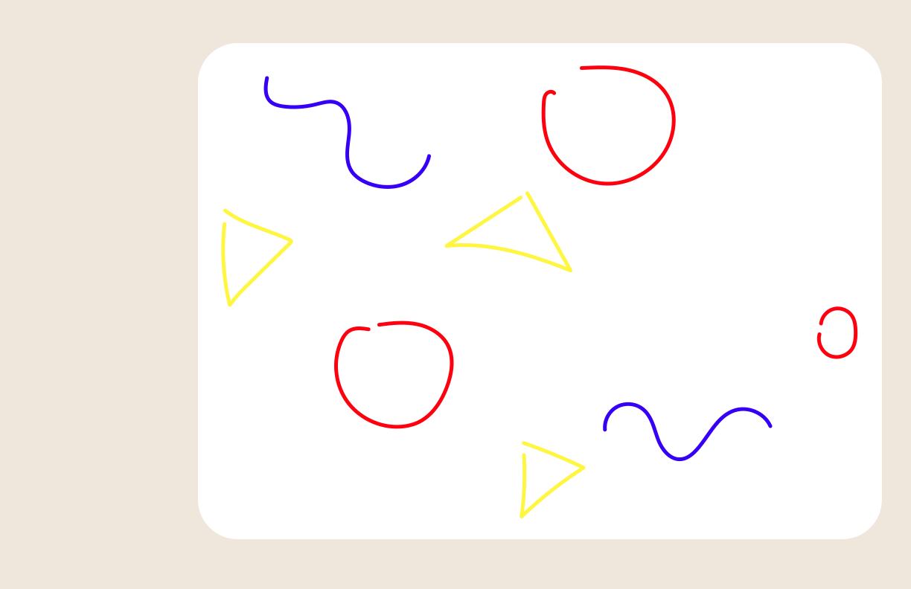

layer 1

-

MS Paint
1987-now

The internet isn't needed to access MS Paint, just a working PC that used the Windows operating system. MS Paint was one of my first experiences with digital art and expanded my knowledge on how different softwares operate in general. The image quality was very low and not ideal for posting online, but it did the job.
In April of 2017, 3D Paint was introduced to accompany Windows 10 as a "refresh" of MS Paint. Its new features include 3D modeling and printing capabilities.
layer 2 layer 3
layer 3